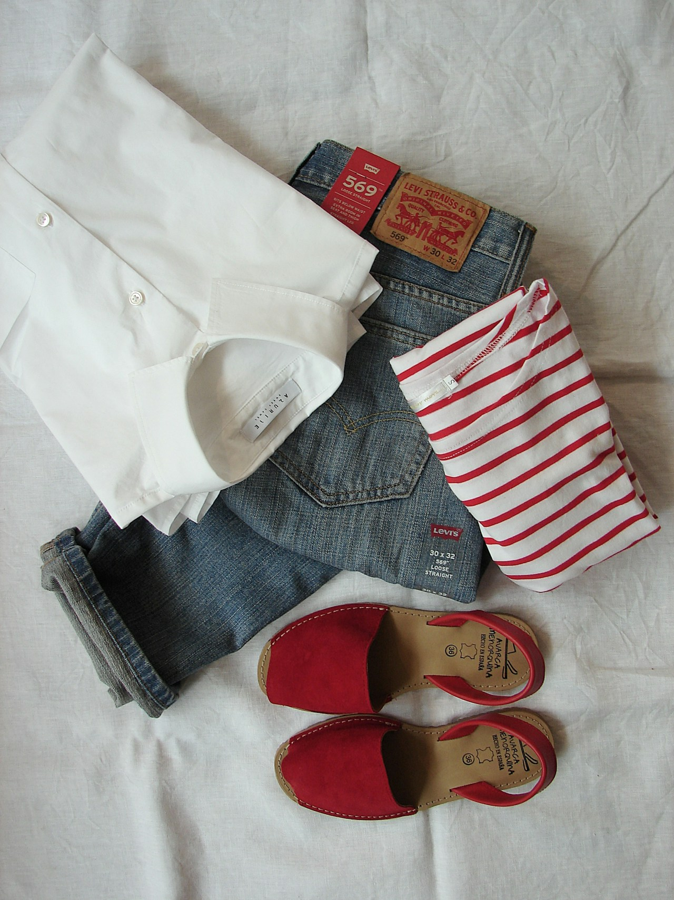

Color TheoryThe Definitive Guide to Amber and Earth-Tone Palette Styling
Explore chromatic harmonies, skin undertone matching, and how to compose balanced outfits using raw amber, terracotta, and sand pigments.
Read Full Monograph (1,500+ Words) → Capsule Architecture
Capsule Architecture
Building a Sustainable Capsule Wardrobe with Natural Fibers
A comprehensive blueprint for curating an 8-to-12 piece modular wardrobe utilizing Belgian linen, virgin wool, and Mongolian cashmere.
Read Full Monograph (1,450+ Words) → Textile Science
Textile Science
The Art of Botanical Fabric Dyeing in Contemporary Couture
From madder root and turmeric to walnut hulls: uncovering the chemical alchemy, mordanting techniques, and longevity of natural plant dyes.
Read Full Monograph (1,400+ Words) → Transitional Dressing
Transitional Dressing
Mastering Transitional Layering with Heavyweight Linen and Cashmere
Strategic thermal weight pairing: how to blend summer flax with autumn knitwear for effortless comfort between seasons.
Read Full Monograph (1,380+ Words) → Tailoring Anatomy
Tailoring Anatomy
Tailored Silhouettes: Understanding Drape, Proportion, and Structure
An inside look at floating horsehair chest canvas, shoulder pitch mechanics, and why structural drape defines enduring elegance.
Read Full Monograph (1,420+ Words) → Conservation
Conservation
Garment Longevity: Care, Preservation, and Restoration of Luxury Textiles
Master guidelines on cedar storage, boar-bristle garment brushing, spot cleansing, and protecting fine wools from degradation.
Read Full Monograph (1,400+ Words) →